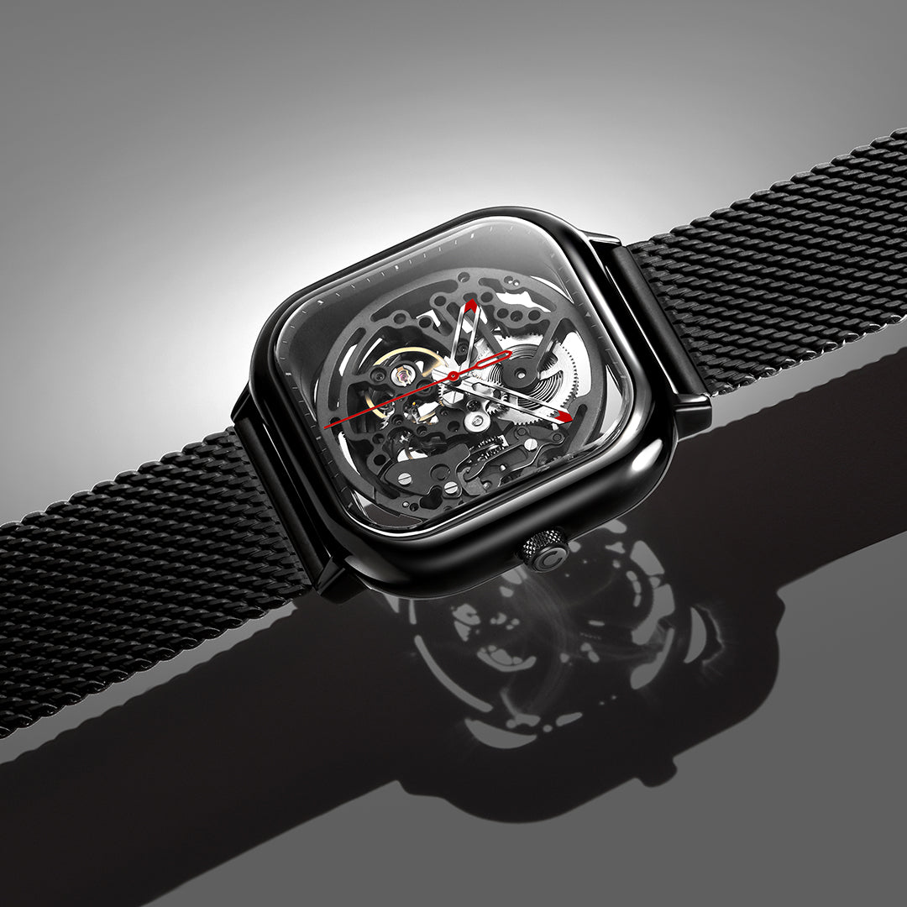
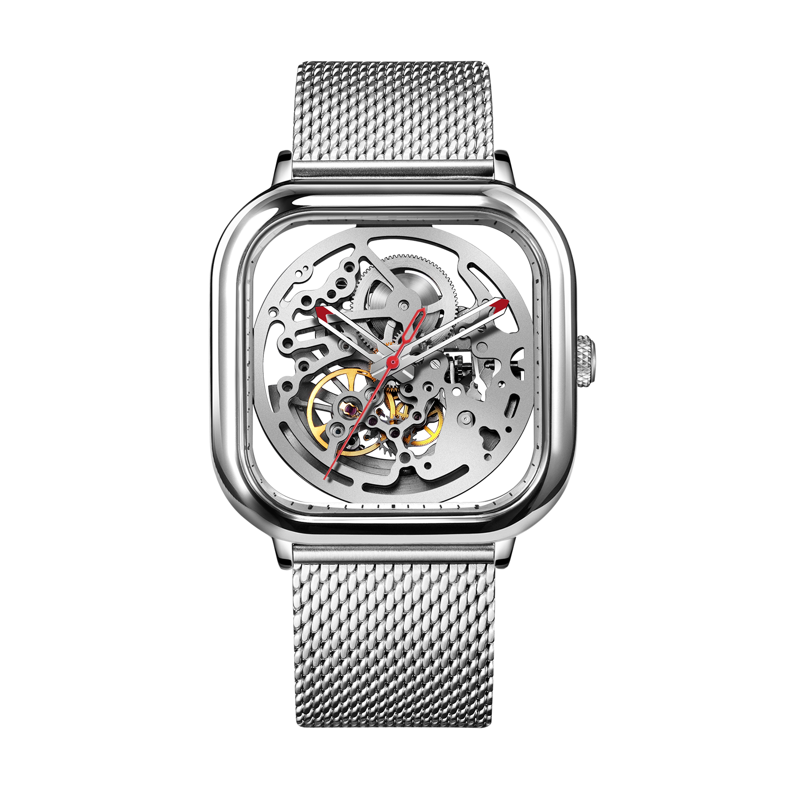
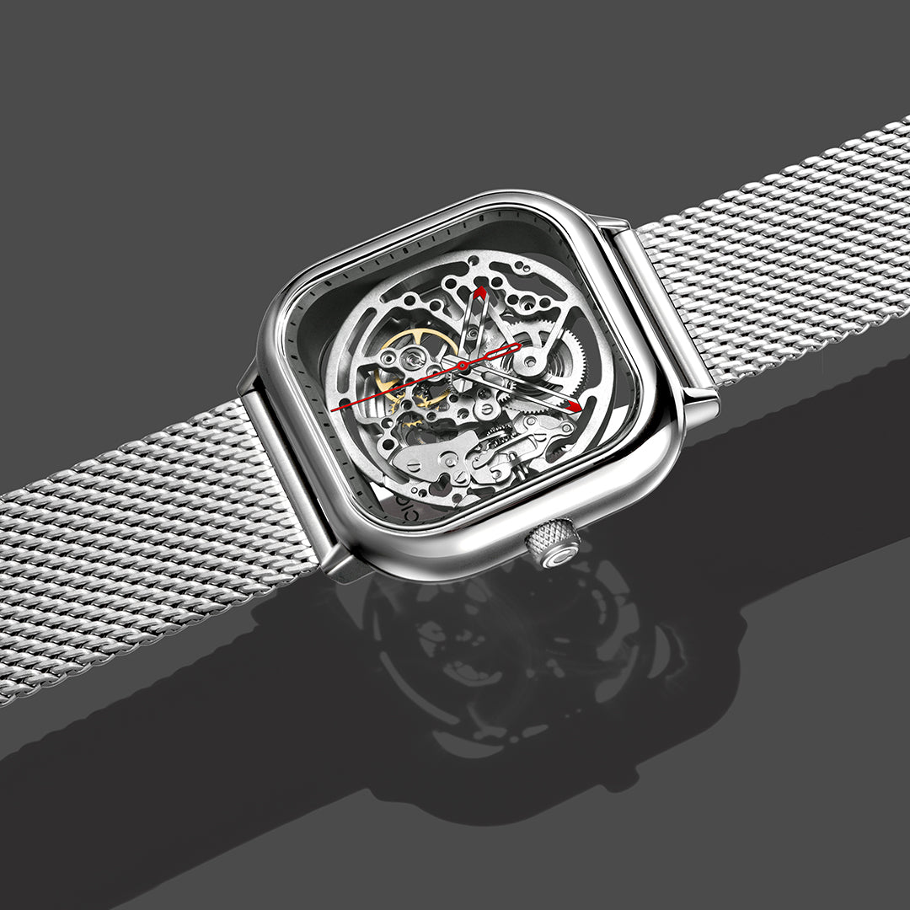
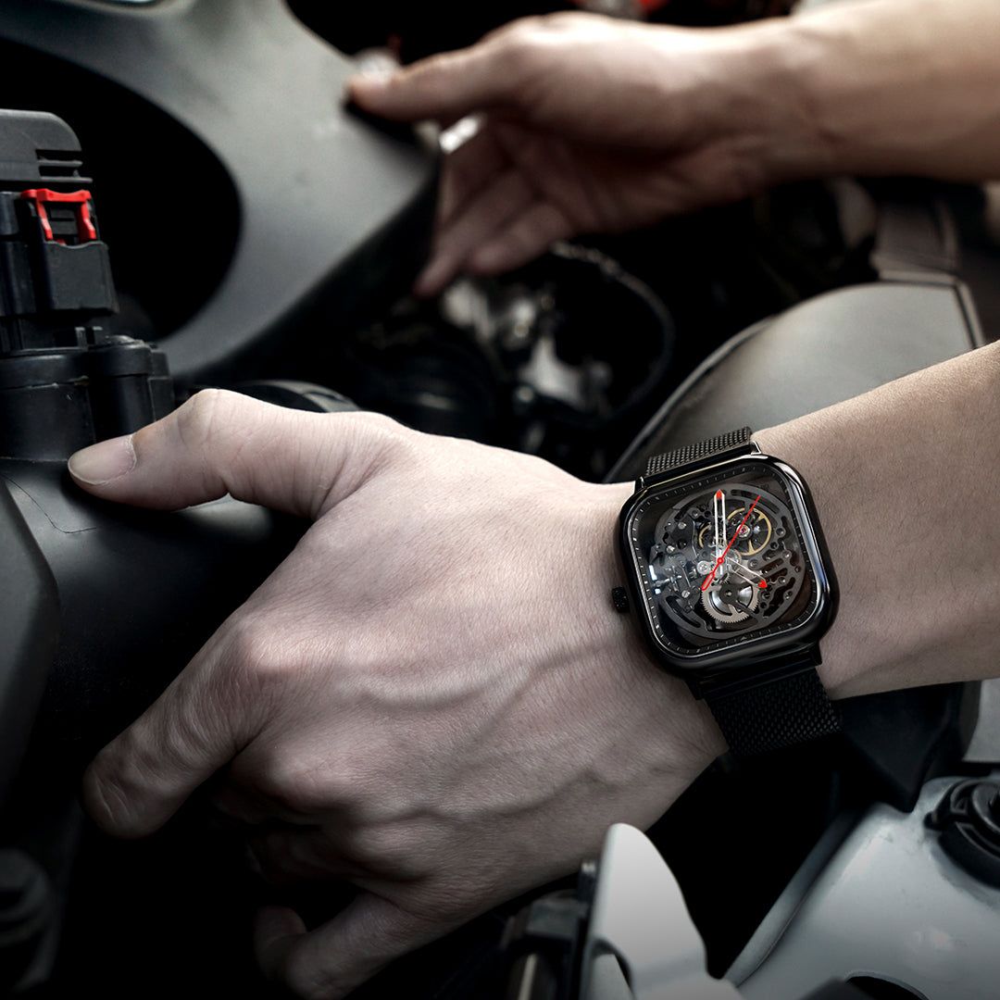
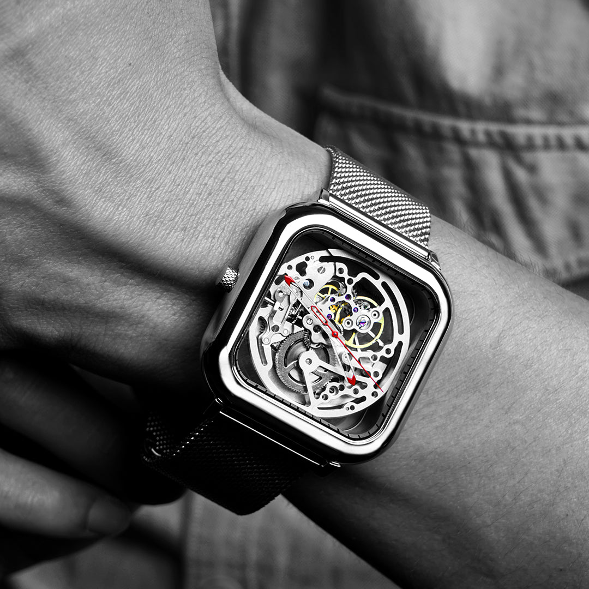

Dois dos prêmios mais rigorosos do design mundial. Uma estrutura completamente vazada que transforma a mecânica relojoeira em escultura vestível.
Estrutura esqueleto 360° · Calibre Seagull AAA
Dois prêmios internacionais de design confirmam o que os olhos percebem, o Skeleton é um objeto de design puro.

O Skeleton surgiu de uma premissa radical: e se o relógio fosse a própria mecânica? Sem mostrador, sem camadas ocultas, apenas engrenagens, molas e pontes expostas em uma caixa cúbica vazada que desafia toda convenção relojoeira. Cada componente interno é visível em qualquer ângulo, um observatório de precisão mecânica que você usa no pulso.
Essa transparência radical foi o que conquistou primeiro o Red Dot Design Award em 2017, um dos prêmios de design mais competitivos do mundo com mais de 6.000 submissões anuais. Dois anos depois, o German Design Award 2019 confirmou: o Skeleton é mais que um relógio, é um statement de design.

O movimento Seagull AAA é a escolha de relojoeiros que não negociam com qualidade. Fabricado pela Tianjin Sea-Gull Watch Group, com mais de 60 anos de história e fornecedora de calibres para marcas europeias e americanas, o Seagull AAA opera a 21.600 vph com 19 rubis de alta qualidade.
No Skeleton, o Seagull AAA não está escondido, está exposto como o protagonista. Cada ponte polida, cada joia e cada engrenagem visível é parte da composição artística do relógio. A malha milanesa em aço completa o conjunto com um acabamento clássico que contrasta elegantemente com o design radical da caixa.
Caixa completamente vazada, a mecânica é visível em todas as faces. Design e funcionalidade são a mesma coisa.
Dois prêmios internacionais entre os mais rigorosos do mundo, validação independente de que este design é excepcional.
Movimento automático de referência com 19 joias, 21.600 vph e 40h de reserva. Qualidade que merece ser exposta.
Aço cirúrgico com revestimento iônico escuro, resistência máxima à corrosão e oxidação com visual de alta precisão.
Red Dot 2017, German Design Award 2019, Seagull AAA, cada detalhe técnico sustenta os prêmios.

| Formato da Caixa | Quadrado |
| Tamanho da Caixa | 43 × 43 mm |
| Espessura | 12,9 mm |
| Material da Caixa | Aço cirúrgico 316L com revestimento iônico |
| Vidro | Cristal de safira anti-reflexo, 1,2mm, dureza 9 Mohs |
| Fundo | Transparente de safira |
| Movimento | Seagull AAA automático |
| Frequência | 21.600 semi-oscilações/h (3 Hz) |
| Reserva de Marcha | ≥ 40 horas |
| Joias | 19 rubis |
| Resistência à Água | 3 ATM (30 metros) |
| Pulseira | Malha milanesa em aço com fecho deslizante |
| Largura da Pulseira | 20 mm |
| Prêmios | Red Dot Design Award 2017 · German Design Award 2019 |
O Seagull AAA é produzido pela Tianjin Sea-Gull Watch Group, fabricante com mais de 60 anos de história e fornecedora de movimentos para marcas suíças e americanas. No Skeleton, o calibre é exposto em 360°, cada ponte polida e cada joia visível. Transparência total como filosofia de design: se a mecânica é boa, por que esconder?
O Skeleton é o relógio dos que entendem design. Dois prêmios internacionais provam que o mundo concorda.
O Skeleton é o relógio CIGA design com o argumento de design mais forte: dois prêmios internacionais independentes em duas categorias diferentes. Use essa credibilidade como base de toda narrativa, e construa em torno da ideia de que beleza real não precisa de camadas para se esconder.
Dez ângulos narrativos para maximizar o impacto do seu conteúdo sobre o Skeleton.
| # | Direcionamento | Foco Narrativo | Base do Script (Exemplo) |
|---|---|---|---|
| 01 | Dois Prêmios, uma Declaração | Red Dot 2017 + German Design Award 2019 | "Dois dos prêmios mais rigorosos do design mundial. Um relógio." |
| 02 | Nada a Esconder | Transparência 360° como filosofia | "Cada engrenagem visível. Cada ponte exposta. Zero camadas entre você e o mecanismo." |
| 03 | Seagull, o Segredo bem Guardado | Credibilidade do movimento Seagull AAA | "O mesmo fabricante que abastece marcas europeias. No seu pulso, exposto." |
| 04 | Bauhaus no Pulso | Forma segue função, design radical coerente | "Bauhaus: forma segue função. O Skeleton não tem nada que não seja necessário, e nada falta." |
| 05 | O Close que Prende | Detalhes mecânicos como conteúdo visual | "Aproxime a câmera. As engrenagens do Seagull AAA são a foto." |
| 06 | Aço que Resiste | 316L com coating iônico | "Aço cirúrgico com revestimento iônico. Design radical que dura décadas." |
| 07 | Safira que Protege e Revela | Cristal de safira 1,2mm frente e fundo | "Safira de 1,2mm de espessura. Dureza 9 Mohs. Proteção que não bloqueia a visão." |
| 08 | 40 Horas de Autonomia | Automático para uso intenso | "Use. Carrega pelo pulso. 40h de reserva. O design radical funciona." |
| 09 | Para Quem Rejeita o Óbvio | Posicionamento para indivíduos com opinião | "Relógios comuns escondem o mecanismo. Este celebra. Essa é a diferença." |
| 10 | Presente para Quem Entende | Ocasiões masculinas, presente de impacto | "Para dar de presente para quem não se impressiona com qualquer coisa." |
Imagens oficiais do Skeleton disponíveis para uso em seu conteúdo.


Duas versões disponíveis: Black com leitura industrial, Silver com pegada clássica.
Compre direto no site oficial da CIGA design Brasil. Garantia, parcelamento e envio para todo o país pela JG Importadora.
Descontos cumulativos: 5% no Pix e mais 5% se for a sua primeira compra.
Comprar no Site Oficial usecigadesign.com.br